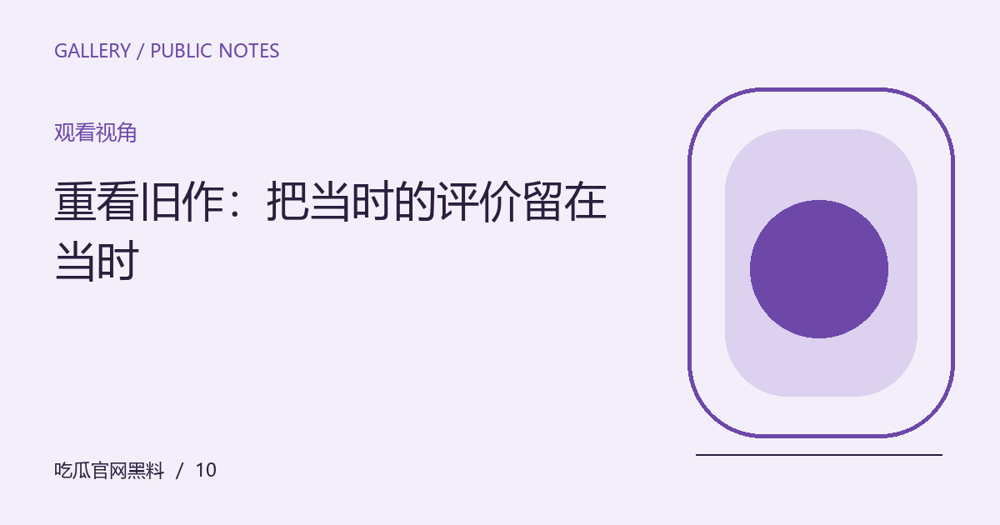

重看旧作：把当时的评价留在当时
作品可以在新的生活经验里获得另一种意义。重看时区分文本变化、观看条件与自身变化，不把新的感受写成唯一进步。

先看见问题发生在哪里
重看一部作品时，记忆里的情节可能与实际不同，曾经忽略的角色也可能变得重要。变化不一定发生在作品，而可能来自观看条件和自身经验。承认这些因素，能让重看文章更诚实，也避免轻易否定过去的观众。
把观察放回具体语境
可以先记录记忆中的关键印象，再在观看后逐项对照。讨论新发现时指向具体场景，说明它与现在关注的问题如何关联。如果比较历史评论，保留当时的材料范围，不把今天才知道的事实倒推为过去的人理应知道。
带着这些线索继续阅读
这份关于“重看旧作：把当时的评价留在当时”的整理，适合用作下一次阅读的检查起点。先明确对象，再核对材料，最后才形成解释。下面几个项目各自回答不同的问题，不必把所有资料压缩成一个好坏判断；缺少其中某项时，说明缺口，远比用想象补出完整结论更有帮助。
- 区分记忆与现有文本
- 说明观看版本与条件
- 为新感受找到具体场景
让解释保留应有的边界
新的解释不自动比旧解释更高级。不同经验可能照亮作品的不同部分，评论可以呈现变化而不安排一个必须到达的结论。对于历史背景，仍应核实材料，不用怀旧情绪补写真实创作过程。
保留一份可继续使用的记录
围绕“重看旧作：把当时的评价留在当时”形成笔记后，可以再做一次自我检查：每个判断是否对应了具体材料，材料是否仍然适用于眼前的问题，自己的偏好又在哪些地方影响了解释。值得保存的不是一句漂亮结论，而是得到结论的路径。后续出现新的作品、发言或说明时，沿同一路径补充与修订，读者也就能够看清变化来自哪里。这个过程不保证所有人达成一致，但能让分歧变得可以讨论。
编辑演示：本文用于展示专题阅读；虚构情境不构成真实人物或事件报道。
下一篇：把一个热梗放进展厅，会看见哪些语境变化 →